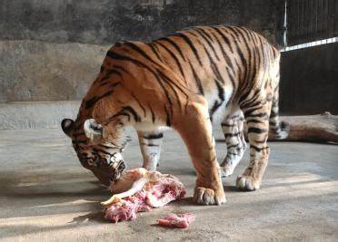

简介
华南虎（学名：Panthera tigris amoyensis），是虎的一个亚种，属于哺乳纲食肉目猫科豹属。华南虎是中国特有的虎种，也被称为中国虎。其身体特征明显，毛色橙黄，身上布满黑色横纹，腹部为白色，四肢内侧也有白色毛发。华南虎体型适中，雄虎比雌虎略大。华南虎具有很强的领地意识，是典型的山地林栖动物。
栖息地
华南虎主要栖息在中国南方的山林地区，包括广东、广西、福建、江西、湖南、浙江等省份的山地和丘陵地带。这些地区植被茂密，有丰富的水源和充足的猎物，为华南虎提供了适宜的生存环境。然而，由于人类活动的影响，如森林砍伐、土地开发和农业扩张等，华南虎的栖息地遭到了严重破坏，其分布范围也大幅缩小。

饮食
华南虎是肉食性动物，主要以鹿、麂、野猪等中小型哺乳动物为食。它具有敏锐的视觉、听觉和嗅觉，能够在山林中悄悄地接近猎物，然后发动突然袭击。华南虎通常会咬住猎物的喉咙或颈部，使其窒息而死，再将其拖到安全的地方享用。由于其食量较大，一只华南虎每天需要捕食数千克的肉类来维持生命。
保护
华南虎是极度濒危的物种，面临着灭绝的危险。为了保护华南虎，中国政府采取了一系列措施，包括建立自然保护区、加强执法打击非法捕猎和贸易、开展人工繁育计划等。目前，一些华南虎在人工繁育环境中生活，科研人员致力于提高其繁殖成功率和幼崽的成活率，同时也在努力改善其栖息地环境，为华南虎的野化放归做准备。此外，国际社会也对华南虎的保护给予了关注和支持，通过合作项目共同推动华南虎的保护工作。